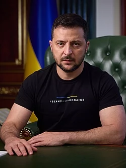

Влади́мир Алекса́ндрович Зеле́нский (укр. Володимир Олександрович Зеленський; род. 25 января 1978, Кривой Рог, Днепропетровская область, Украинская ССР, СССР) — украинский государственный и политический деятель. Президент Украины и Верховный главнокомандующий Вооружённых сил Украины с 20 мая 2019 года. До избрания президентом получил широкую известность как шоумен, комик, актёр кино, озвучивания и дубляжа, кинорежиссёр, сценарист, продюсер кино и телевидения, телеведущий, певец, юморист, пародист и юморист. Был совладельцем и художественным руководителем «Студии Квартал-95» (2003—2019) и генеральным продюсером телеканала «Интер» (2010—2012).
Фото
Краткая информация
Карьера
Начал политическую карьеру в 2019 году и баллотировался на выборах президента Украины 2019 года. По итогам голосования был избран шестым президентом Украины.
Карьерный путь начал с участия в КВН в командах «Запорожье — Кривой Рог — Транзит», «Сборная Кривого Рога» и «95-й квартал», в последней из которых Владимир Зеленский был капитаном, актёром и автором большинства номеровПерейти к разделу «КВН». В 2003 году, после ухода из КВН, команда Зеленского «95-й квартал» начала давать концерты на телевидении. Уже как «Студия Квартал-95» в 2005 году команда создаёт шоу «Вечерний квартал», в котором Владимир Зеленский предстает идеологом, автором, режиссёром и ведущим актёромПерейти к разделу «Студия «Квартал-95»». В 2010—2011 годах работал генеральным продюсером телеканала «Интер». На протяжении своей карьеры выступал в многочисленных телепроектах, самое примечательное — в роли актёра («Вечерний квартал»), ведущего («Вечерний Киев», «Лига смеха») и судьи («Рассмеши комика»)
Личная жизнь
Супруга (с 6 сентября 2003) — Елена Владимировна Зеленская (дев. Кияшко, род. 6 февраля 1978). По образованию архитектор, окончила Криворожский технический университет с красным дипломом. Бенефициар ООО «Студия Квартал — 95» (в собственности 0,01 % компании, остальные 99,99 % принадлежат супругу), владеет 25 % ООО «Зелари Фиш», занимающейся переработкой и консервированием рыбы[118]. Сценарист и автор «Студии квартал 95». Владимир и Елена знакомы со школы, где учились в параллельных классах
У Владимира и Елены двое детей: дочь Александра (род. 15 июля 2004) и сын Кирилл (род. 21 января 2013). В 2014 году Александра снималась в фильме «8 новых свиданий» в роли Саши, дочери главного героя; в 2016 году участвовала в шоу «Рассмеши комика. Дети» и выиграла 50 000 гривен; её крёстный отец — Сергей Кравец, муж Елены Кравец
Интересные факты
Названия в честь Владимира Зеленского
Ausichicrinites zelenskyyi — новый вид животных, древних морских лилий, описанный 20 июля 2022 года группой польских палеонтологов, назван в честь Владимира Зеленского за его мужество и отвагу в защите свободной Украины.
«Человек года»
7 декабря 2022 года журнал «Time» объявил Зеленского «человеком года» в знак признания его лидерства во время вторжения России на Украину.